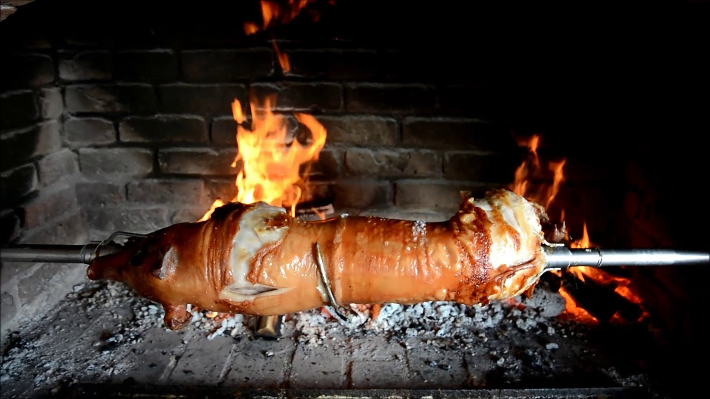

Spit roasted piglet

Perfect for family gatherings, celebrations and holidays. A staple of south-eastern Europe, a pechenje is a welcome sight and always a cause for celebration.
It contains the following ingridients:
- Piglet (about 23-33 Kg, depending on availability and need)
- Salt
- Oil (olive or sunflower)
Instructions:
- Make incisions on the slaughtered and cleaned piglet for salting (buns, neck - basically anywhere where the meat is too thick for salt to penetrate)
- Salt inside and in incisions, depending on type of roast spit, mount and tie up (legs to each other and to spit)
- Place next to the fires (one head height, one leg height)
- Keep well oiled while gradually connecting the fires, make sure it spins equally but not too fast
- When the skin cracks, it's nearing done, wait a little more for the thicker parts, though be carefull of the ribs
- Cut into pieces and serve on a platter, along with young onions, horse radish and/or russian salad